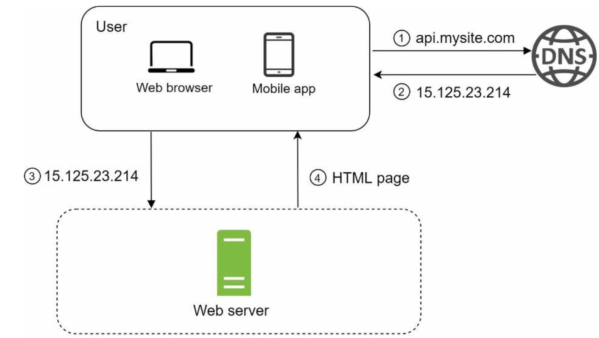
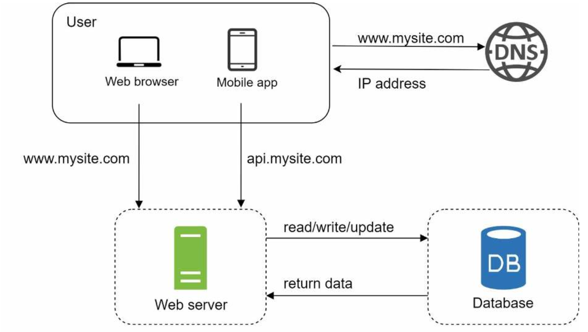
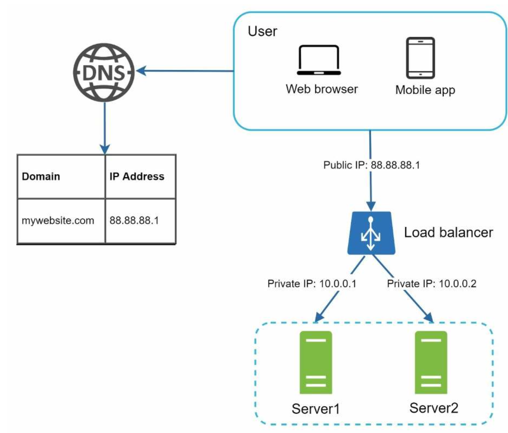
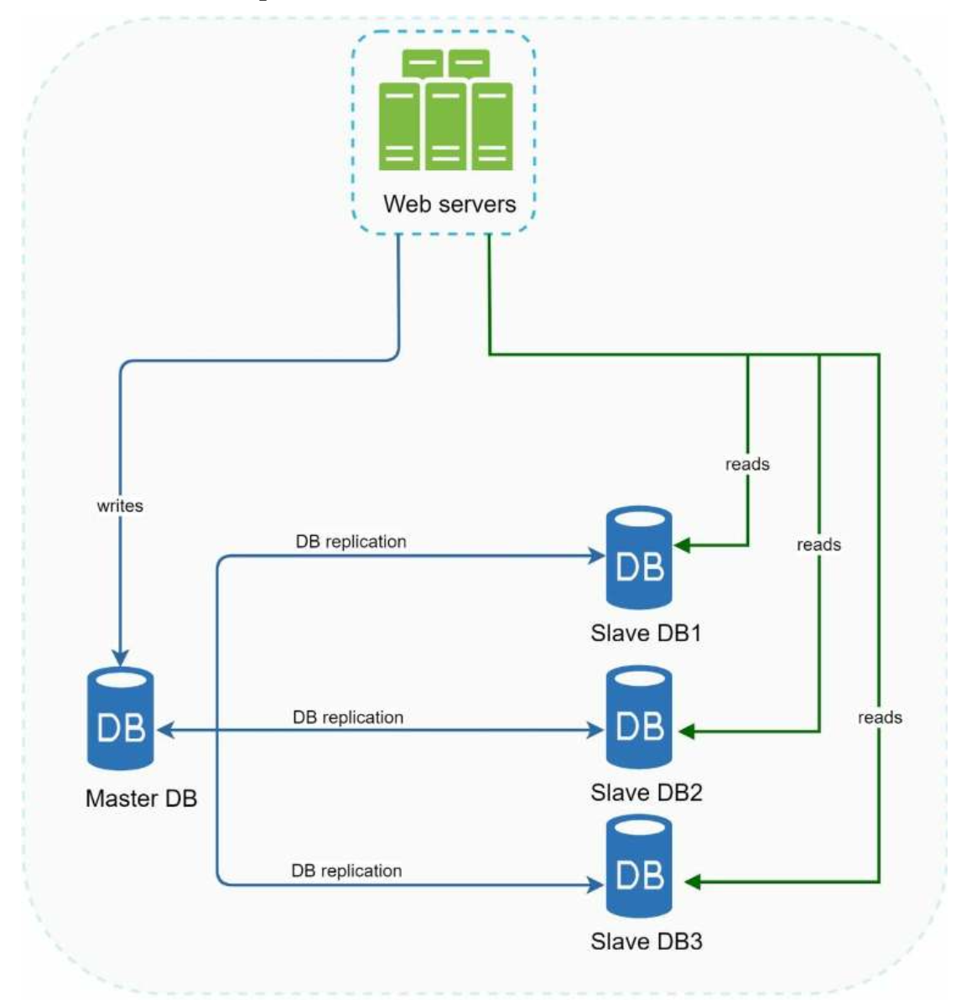
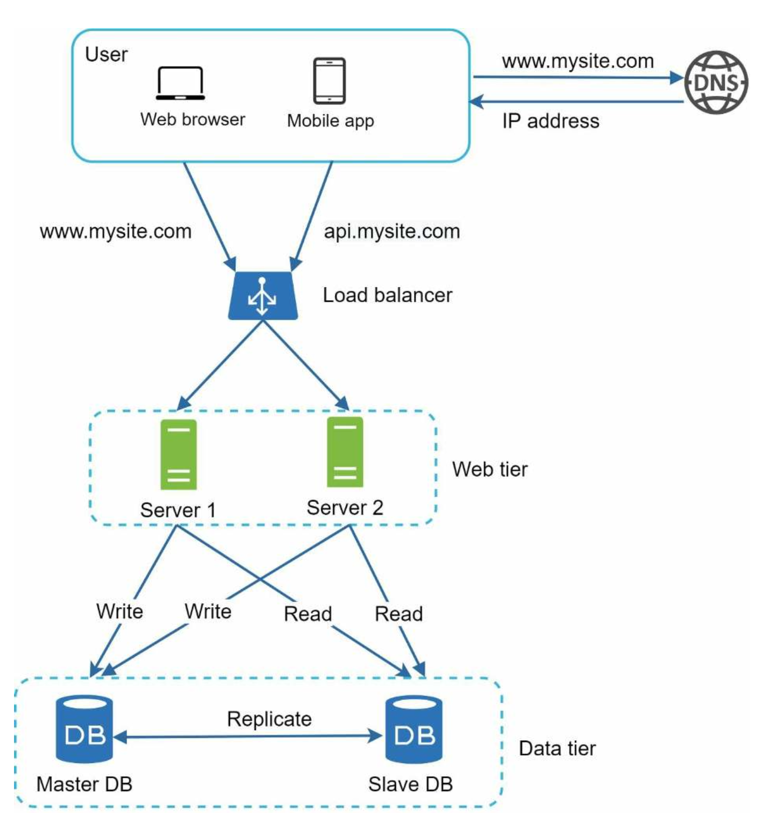
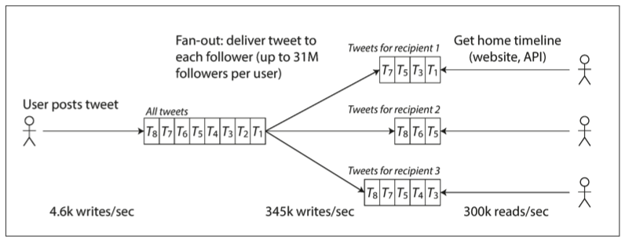

Sistemas Actuales de Computación
Definición
A distributed system is one in which components located at networked computers communicate and coordinate their actions only by passing messages
Leslie LamportPreguntar a IA:
“You know you have a distributed system when the crash of a computer you’ve never heard of stops you from getting any work done.”
Characteristics:

Propiedades:




Propiedades:
Rendimiento. Mejora en términos de escalabilidad, aunque tiene un límite. Mayor complejidad en monitorizar, reportar y gestionar.
Tolerancia a fallos. A mayor número de elementos, mayor número de fallos y de todo tipo: de red, aislados, persistentes o temporales, auto-resolubles o requieren participación humana,… Ocurren en cualquier momento y son impredecibles Su gestión exige mayor coordinación: mayor coordinación peor rendimiento
Escalabilidad. La escalabilidad ideal no es alcanzable. A mayor número de elementos, mayor coordinación y mayor número de fallos
Consistencia & Semántica. A mayor número de elementos, la gestión de los datos y el sentido que tienen es más díficil de garantizar.
Real data
A user can publish a new message to their followers (4.6k requests/sec on average, over 12k requests/sec at peak).
A user can view tweets posted by the people they follow (300k requests/sec).

Relaciona cada uno de los Escenarios con un único Reto propio de los sistemas distribuidos y justifica la problemática que plantea este reto en el escenario elegido.
| ESCENARIO | RETOS |
|---|---|
| 1. Aplicación de Chaos enineering | A. Calidad de servicio |
| 2. La especificación de OpenAPI | B. Concurrencia |
| 3. Un sistema de reserva de vuelos | C. Transparencia |
| 4. Una banca electrónica | D. Escalabilidad |
| 5. Una base de datos distribuida como etcd | E. Seguridad |
| 6. Un gestor de logging | F. Gestión de fallos |
| 7. La herramienta Docker | G. Apertura |
| 8. Una red wifi dentro de un campus o unas oficinas | H. Heterogeneidad |
Genera tiempos de respuesta ficticios siguiendo una distribución exponencial con \(\lambda = 2\). Calcula la media, el percentil 50%, el percentil 90% y el percentil 99.9%. ¿Qué magnitudes están presentes? ¿Qué perciben los usuarios?
¿Por qué una distribución exponencial?
Content Delivery Netword (CDN) y Sistema Distribuido?Edge Computing?Reliability?